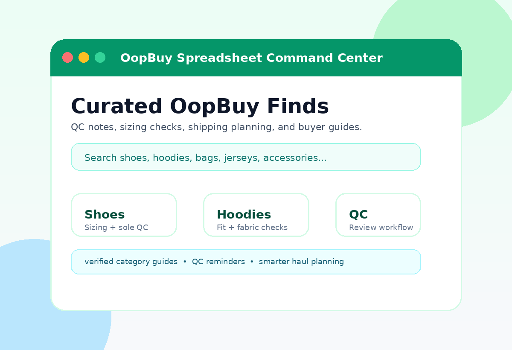

Find category-focused OopBuy research, QC reminders, sizing checks, and shipping guidance before you commit to your next parcel.

Each category is written around real buyer questions: sizing, QC angles, shipping weight, material checks, and how to compare available finds.
Sneakers, runners, boots, slides, and footwear QC notes
Heavyweight fleece, knitwear, embroidery, and fit checks
Graphic tees, blanks, print durability, and wash-risk notes
Bombers, puffers, denim, varsity layers, and seasonal outerwear
Cargo pants, denim, track pants, shorts, and measurement strategy
Caps, beanies, bucket hats, embroidery, and shape checks
Tracksuits, matching outfits, co-ords, and color consistency
Boxers, socks, basics, packs, and comfort-focused picks
Football, basketball, retro kits, namesets, and patch QC
Belts, bags, wallets, sunglasses, and small-item finds
Mixed finds, lifestyle items, seasonal pieces, and uncategorized picks
Plan your haul, avoid common mistakes, and review your order before international shipping.
Start here if you are new to OopBuy. Learn how to choose categories, compare listings, read QC photos, and plan your first parcel.
Trust & SafetyA practical review of OopBuy from a buyer workflow perspective, including payments, QC, support expectations, and seller risk.
Trust & SafetyUnderstand how to reduce risk when using OopBuy, from account hygiene and payment methods to shipping insurance and QC review.
Spreadsheet ResearchLearn what makes an OopBuy spreadsheet useful: fresh links, QC references, sizing notes, category coverage, and practical buyer context.
QC WorkflowA category-aware QC checklist covering shoes, clothing, bags, jerseys, accessories, and measurement photos before international shipping.
ShippingPlan your OopBuy parcel by understanding weight, box removal, shipping lines, insurance, customs risk, and realistic delivery timing.
Pick the type of find you want before browsing randomly.
Check sizing, material, measurement, and shipping notes.
Use the category links to compare current options.
Inspect photos carefully and ask for extra angles when needed.
It is a curated research hub for OopBuy finds, category browsing, QC checks, sizing notes, and shipping planning.
No. It covers shoes, hoodies, t-shirts, jackets, pants, headwear, sets, jerseys, accessories, and mixed finds.
No. Always review warehouse QC photos and request measurements when sizing matters.
Before every order. Seller stock, batches, prices, and availability can change quickly.
Start with the category map, compare current finds, and keep QC checks in mind before shipping.
Open Full Spreadsheet →